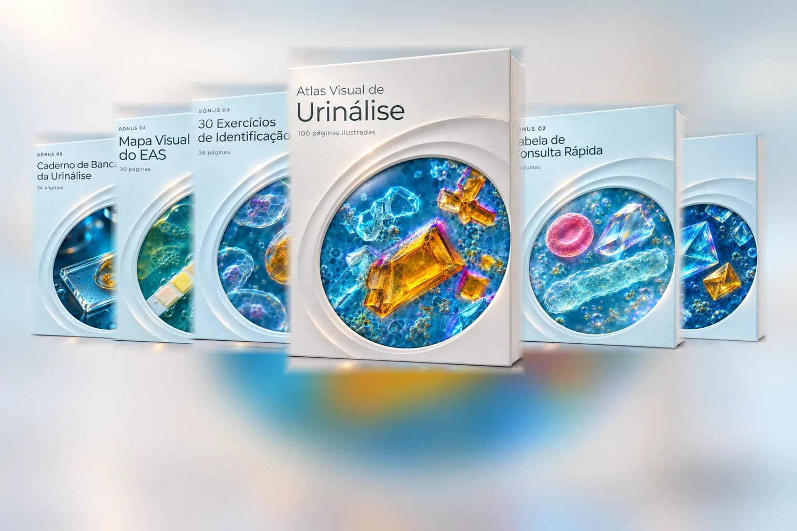
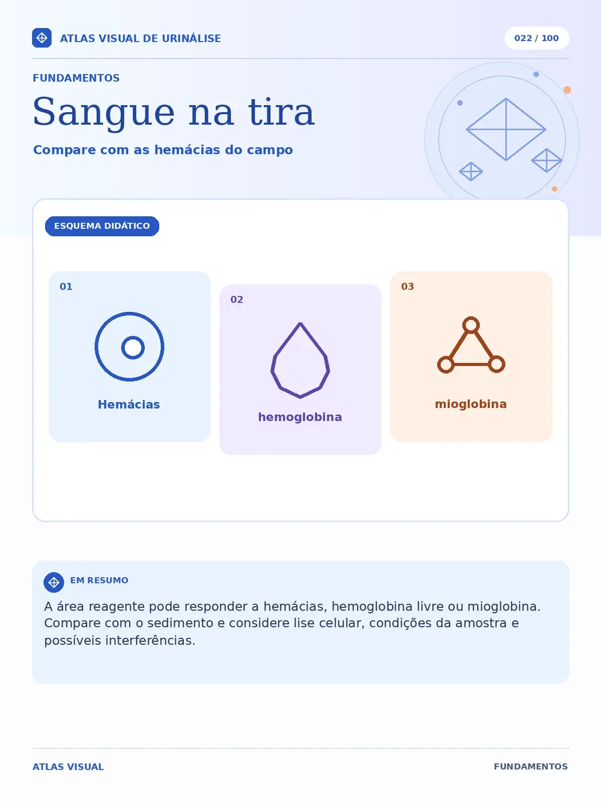
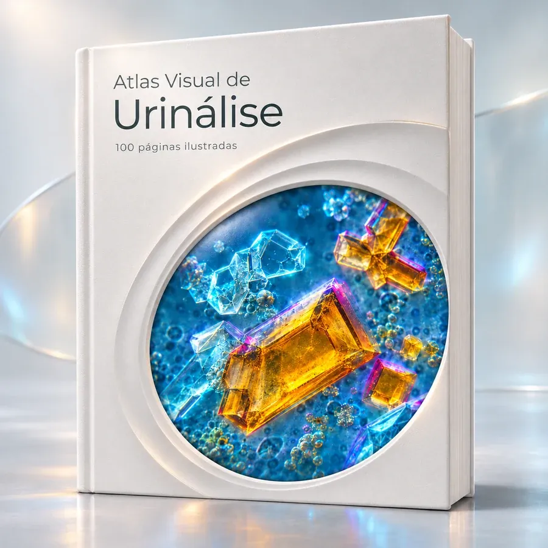
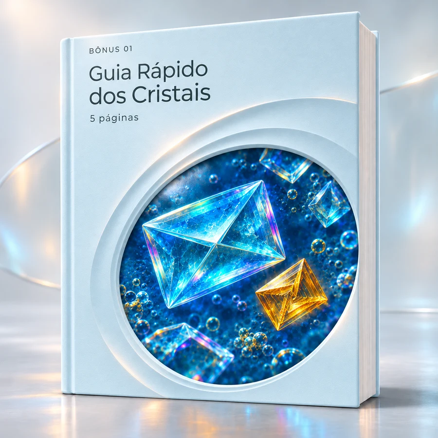
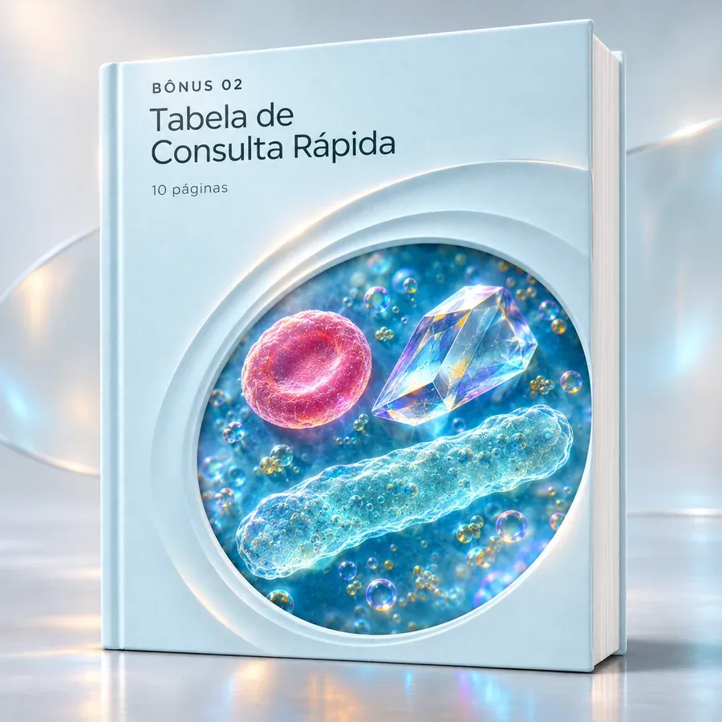
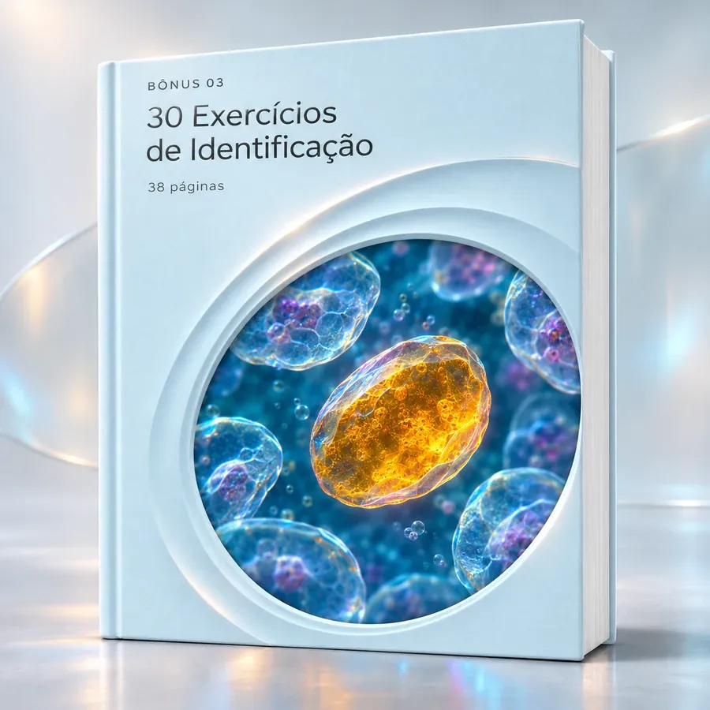
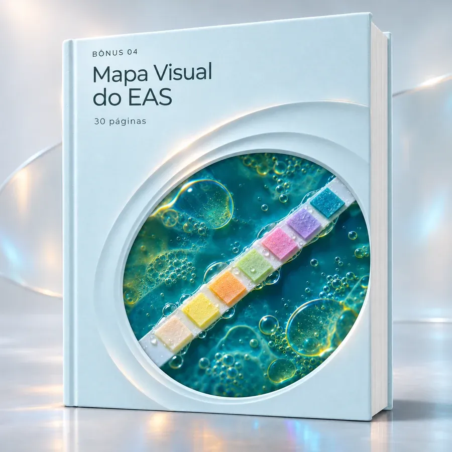
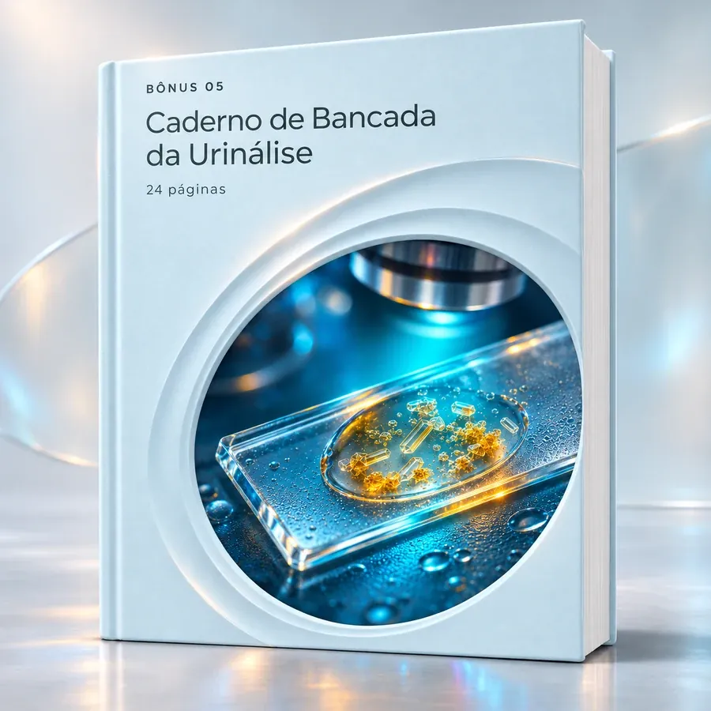

Tantos elementos no campo. O que examinar primeiro?
O Atlas organiza o exame desde a coleta, conservação e preparo do sedimento até a varredura em 100x e o detalhamento em 400x.
Siga uma sequência visual para entender onde olhar, quais detalhes observar e como diferenciar estruturas parecidas. Receba a biblioteca completa de +207 páginas (Atlas Visual + 5 Bônus de Bancada gratuitos) com micrografias anotadas, comparações lado a lado e casos guiados do EAS.

Decorar nomes isolados é apenas uma parte. A verdadeira dificuldade surge na bancada quando duas estruturas se parecem ao microscópio ou quando a tira reagente parece discordar do sedimento.
Veja como uma ficha conecta esses elementos →O Atlas organiza o exame desde a coleta, conservação e preparo do sedimento até a varredura em 100x e o detalhamento em 400x.
Fichas comparativas lado a lado mostram como distinguir hemácias de leveduras, muco de cilindros hialinos e cristais semelhantes.
Mapas visuais e casos guiados explicam como cruzar cor, densidade, pH e fita reagente com a microscopia e reconhecer interferentes.
Esta é a página 04 do Atlas Visual: “Como ler uma ficha”. Cada elemento do sedimento é apresentado com micrografia anotada, critérios morfológicos e limites de identificação.
Identifique contorno, tamanho relativo, refração, núcleo, granulações ou faces cristalinas nos aumentos de 100x e 400x.
Confronte estruturas parecidas lado a lado (como hemácia × levedura ou cilindro hialino × muco) e cruze com pH e tira reagente.
Reconheça os limites de cada achado, evite armadilhas de artefatos e organize o registro técnico com segurança.
Toque nas objetivas abaixo para simular a rotina de microscopia do sedimento: comece pela varredura panorâmica em 100x e aprofunde nos traços morfológicos em 400x.
Em menor aumento e condensador baixo, você percorre as bordas da lamínula para localizar matrizes cilíndricas de baixo índice de refração antes de trocar para 400x.
Explore 20 páginas selecionadas do Atlas Visual: fundamentos, tira reagente, células, cristais, cilindros, comparações lado a lado e casos comentados. Abra o livro ou toque em uma prévia para observar os detalhes.
Páginas extraídas diretamente do PDF do Atlas Visual de Urinálise. Abra o livro, folheie e toque em qualquer página para ampliá-la.
Selecione um dos 5 dilemas clássicos da bancada de urinálise e veja exatamente quais critérios ópticos separam cada estrutura:
Estruturas incolores e arredondadas que frequentemente geram falso alerta de hematúria.
Procure uma gema aderida (brotamento), parede mais refringente e variação de calibre entre células próximas. Não sofre lise com ácido acético.
Contorno circular uniforme, duplo halo ao mover o foco micrométrico e ausência de brotamentos. Correlaciona-se com sangue na tira.
Selecione qualquer parâmetro da fita bioquímica abaixo para revisar o que observar na lâmina e como agir quando os resultados parecem divergir:
Atividade pseudoperoxidásica do grupo heme (hemácias íntegras, hemoglobina livre pós-lise ou mioglobina). Leitura em 60 segundos.
Procure hemácias isomórficas ou dismórficas em 400x, além de cilindros hemáticos em 100x.
Tira positiva com sedimento sem hemácias sugere lise celular (urina alcalina ou hipotônica) ou mioglobinúria. Ácido ascórbico (vitamina C) elevado pode causar falso-negativo na tira.

Uma sequência visual para estudar o exame de urina, da coleta e preparo até a microscopia e o registro.
Reconheça tipos de amostra, coleta de jato médio, tempo decorrido e conservação.
Relacione cor, aspecto, densidade, pH e áreas reativas com seus tempos de leitura.
Execute centrifugação, ressuspensão, varredura inicial em 100x e detalhamento em 400x.
Identifique células, cristais, cilindros, microrganismos e artefatos pelos traços morfológicos.
Consulte as fichas lado a lado quando dois elementos tiverem contorno ou refração semelhantes.
Cruze fita e sedimento nos casos guiados, mapas visuais e exercícios comentados.
O núcleo da biblioteca: 100 páginas ilustradas no Atlas Visual, organizadas para estudo sequencial ou consulta rápida na bancada.

O conteúdo acompanha o exame completo: coleta de jato médio, conservação, exame físico, parâmetros químicos da tira reagente e fichas detalhadas de células, cristais, cilindros, microrganismos e artefatos.
Compare diretamente estruturas que geram hesitação na bancada, com setas e notas explicando exatamente onde olhar e quais limites considerar antes de classificar o achado.
Aplique a leitura integrada em casos simulados (hematúria, bactérias e leucócitos, cristais em urina ácida e suspeita de efeito medicamentoso) e localize qualquer elemento pelos índices visuais.
Material didático de apoio. Não substitui a formação supervisionada, os procedimentos operacionais padrão do laboratório ou o julgamento de um profissional habilitado.
107 páginas adicionais distribuídas em 5 materiais práticos para acompanhar a bancada, treinar a identificação e organizar seu raciocínio.

Reúne oxalato de cálcio, ácido úrico, estruvita, cistina e outros cristais, com pistas práticas para diferenciar formas semelhantes à primeira vista.

Cada entrada reúne imagem, nomenclatura e traços morfológicos organizados por categorias para localizar rapidamente qualquer célula, cilindro ou cristal.

Cada questão apresenta uma micrografia real e quatro alternativas. Registre suas escolhas e confira no gabarito quais pistas do campo sustentam a identificação.

Conecta o aspecto da amostra, os resultados da tira reagente e a microscopia do sedimento — inclusive quando os achados parecem discordar — mais 3 casos e fluxograma.

Inclui checklists, fichas por tipo de achado, três práticas com micrografias e folhas reutilizáveis preenchíveis no próprio PDF ou prontas para impressão.
Relatos de profissionais e estudantes de análises clínicas, biomedicina, farmácia e medicina que utilizam o Atlas Visual como referência rápida. Passe o mouse sobre um cartão para pausar.
 🇧🇷
🇧🇷
 🇧🇷
🇧🇷
 🇧🇷
🇧🇷
 🇧🇷
🇧🇷
 🇧🇷
🇧🇷
Adquira hoje o Atlas Visual de Urinálise (100 páginas) por pagamento único de R$ 27,90 e receba gratuitamente todos os 5 bônus práticos (+107 páginas extras) para consultar, praticar e registrar na bancada.
Estude, compare, pratique e registre no laboratório com a biblioteca completa de 207 páginas.
Acesso imediato · Sem assinatura
🎁 Você está ganhando todos os 5 Bônus (+107 páginas) Leve o pacote completo de 6 materiais (+207 páginas em PDF) pelo valor único promocional.
Quero o Atlas + 5 Bônus por R$ 27,90 → Material digital em PDF · Em português · Garantia incondicional de 7 diasAcesso imediato aos 6 materiais digitais em PDF (+207 páginas em português) e garantia incondicional de 7 dias. Os livros e dispositivos dos mockups são representações ilustrativas.
O que você precisa saber sobre o formato, o acesso imediato e os 5 bônus incluídos.
É um material de estudo e consulta rápida em formato digital (PDF) com 100 páginas ilustradas para quem quer aprender a reconhecer e descrever o que aparece no sedimento urinário, com micrografias anotadas, comparações lado a lado e casos guiados.
Sim! Por apenas R$ 27,90 (pagamento único), você recebe o pacote completo de +207 páginas: o Atlas Visual de Urinálise (100 páginas) e ganha gratuitamente os 5 bônus exclusivos de bancada — Guia Rápido dos Cristais (5 pág.), Tabela de Consulta Rápida de 36 elementos (10 pág.), 30 Exercícios de Identificação com gabarito comentado (38 pág.), Mapa Visual do EAS (30 pág.) e Caderno de Bancada (24 pág.).
Todos os materiais, fichas, tabelas, exercícios e mapas estão integralmente em português do Brasil.
São arquivos digitais em formato PDF de alta resolução. Você pode estudar no computador, tablet ou celular, ou imprimir as páginas, tabelas e checklists que desejar usar na bancada.
Sim. O Caderno de Bancada da Urinálise permite preencher os campos diretamente no leitor de PDF ou imprimir as folhas reutilizáveis para usar durante a aula prática, o estágio ou a rotina.
Sim. Você pode estudar em sequência — desde a coleta e o preparo da amostra até a tira reagente e a microscopia — ou abrir diretamente na dúvida que surgiu durante a aula, o estágio ou a análise de rotina.
Sim. Nesta página você pode usar o visor óptico interativo, o comparador lado a lado, o simulador de tira reagente, o livro virtual folheável e as galerias com dezenas de páginas ampliáveis.
É um pagamento único de R$ 27,90 com acesso completo ao Atlas Visual e aos 5 bônus gratuitos. Não há mensalidades nem cobranças recorrentes, e você conta com 7 dias de garantia incondicional.